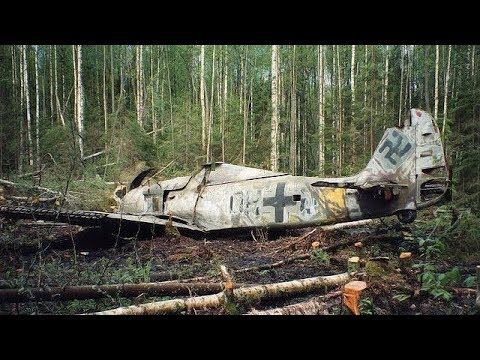

| Rangée 1 Cellule 1 |
Voiture de type "Traction" de marque "Citroen"  Il s'agit d'un avion Focke Wulf FW-190A5 / U3 Wurger WWII Luftwaffe de la Seconde Guerre mondiale, au 4./JG54. Le pilote Feldwebel Paul Ratz. Cet avion a été perdu en 1943 et retrouvé en 1989. |
Rangée 1 Cellule 4 |